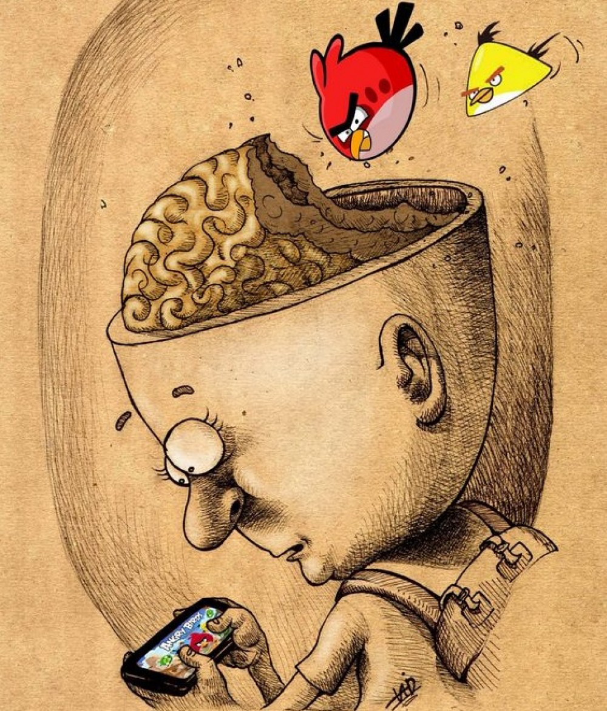
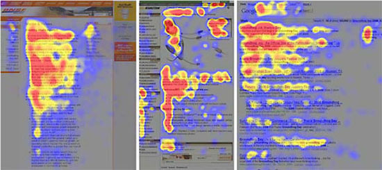

Деградация мозга

С каждым днем все больше людей жалуется на проблемы с мозговой деятельностью — на все возрастающую рассеянность (т.е. невозможность концентрировать свое внимание, собираться с мыслями для решения каких-то задач), на сложности с запоминанием информации, на физическую невозможность читать большие тексты, не говоря уже про книги.
И просят дать им что-нибудь для улучшения мозговой деятельности в целом и памяти в частности. Причем, как это ни парадоксально, данная проблема характерна не только и не столько для пожилых людей, ослабевать мозгами которым, вроде как, «положено по возрасту», сколько для людей среднего и моложе среднего возраста. При этом многие даже не интересуются, почему так происходит — автоматически списывают это на стрессы, усталость, нездоровую экологию, на тот же возраст и т.п., хотя все это даже близко не является причиной. Среди моих пациентов есть те, кому далеко 70, но кто не имеет вообще никаких проблем ни с памятью, ни с мозговой активностью. Так в чем же причина?
А причина состоит в том, в чем, несмотря ни на какие доводы, никто, категорически, не хочет отказаться от, так называемой постоянной, круглосуточной «подключенности к информации». Другими словами, ускоренная утрата твоих мозговых функций началась в тот самый знаменательный день, когда Вы решили быть постоянно «на связи». И нет никакой разницы — вынудила ли Вас к этому служебная необходимость, изнывание от безделья или элементарная боязнь быть «не на уровне», т.е. боязнь прослыть белой вороной, чудаком в среде себе подобных.
Еще в 2008 году было известно, что среднестатистический пользователь интернета прочитывает не более 20% текста, размещенного на странице, и всячески избегает больших абзацев! Более того, специальные исследования показали, что человек, постоянно подключенный к сети, текст не читает, а сканирует как робот — выхватывает отовсюду разрозненные куски данных, постоянно перескакивает с одного места на другое, а информацию оценивает исключительно с позиции «поделиться», т.е. «А можно ли это «откровение» кому-нибудь переслать?». Но не с целью обсудить, а, главным образом, с целью вызвать эмоции в виде анимированной «отрыжки», сопровождающейся короткими репликами и возгласами в СМС-формате.
В ходе исследований выяснилось, что страницы в интернете, как уже говорилось, не читаются, а бегло просматриваются по шаблону, напоминающему латинскую букву F. Пользователь сначала считывает несколько первых строк текстового содержимого страницы (иногда даже полностью, от начала до конца), затем перескакивает на середину страницы, где считывает еще несколько строк (как правило, уже лишь частично, не дочитывая строки до конца), а затем быстро спускается к самому низу страницы — посмотреть, «чем дело кончилось».

Красным — зоны, где внимание читателя задерживается дольше всего.
Желтым — зоны беглого просмотра. Синие и серые области не читаются вообще
Поэтому наиболее эффективным способом подачи информации рядовому интернет-пользователю является отображение информации в виде перевернутой пирамиды (т.е. согласно принципу «чем ниже, тем меньше») с обязательным выделением ключевых слов (чтобы потребители информации понимали, что важно, а что — не очень) и раскрытием не более одной мысли за абзац. Только так можно задержать внимание на странице максимально долго. Если же по мере спуска вниз по странице плотность информации не убывает или, того хуже, увеличивается (как, например, в этой статье), то на таких страницах задерживаются лишь единицы.
На проблемы с восприятием информации жалуются люди всех рангов и специальностей — от высококвалифицированных университетских профессоров до сервисных работников по обслуживанию стиральных машин. Подобные жалобы можно особенно часто услышать в академической среде, т.е. от тех, кто по роду деятельности вынужден плотно и ежедневно общаться с людьми (обучать, читать лекции, принимать экзамены и т.д) — они сообщают, что и без того низкий уровень навыков чтения и восприятия информации у тех, с кем им приходится работать, год от года падает все ниже и ниже.
Большинство людей испытывает колоссальные затруднения при чтении больших текстов, не говоря уже про книги. Даже блог-посты размером более трех-четырех абзацев уже кажутся большинству слишком трудными и нудными для восприятия, а потому скучными и не заслуживающими даже элементарного вникания. Вряд ли найдется человек, который не слышал бы популярного сетевого высказывания «слишком много букв — не осилил», которое обычно пишут в ответ на предложение прочитать что-то длиннее пары десятков строк. Получается замкнутый круг — писать много нет смысла, поскольку это почти никто не будет читать, а сокращение объема передаваемой мысли приводит к еще большему скудоумию не только читателей, но и писателей. В результате имеем то, что имеем — массовое отупение.
Даже люди с хорошими (в прошлом) навыками чтения говорят, что после целого дня метания по интернету и лавирования среди десятков и сотен электронных писем, они физически не могут начать даже очень интересную книгу, поскольку чтение уже одной только первой страницы оборачивается настоящей пыткой.
Чтение попросту «не идет», прежде всего, потому, что:
а) не получается заставить себя перестать сканировать текст, отыскивая в нем ключевые слова и
б) совершенно не усваивается сложный синтаксис, свойственный большинству классических, высокосодержательных или наукоемких произведений, который полностью отсутствует в обмене телеграфной «СМС-отрыжкой».
В результате этого одно предложение приходится перечитывать по нескольку раз! Наиболее откровенные люди так прямо и говорят: я противен/противна сам(а) себе.
Но это еще далеко не все. Из-за постоянной подключенности к интернету резко ухудшаются такие навыки человека, как способность возвращаться к уже некогда осмысленной информации, анализировать прочитанное и подключать воображение. Еще хуже то, что в 80% случаев люди ходят в интернет за сомнительными развлечениями, либо черпают оттуда информацию, имеющую не то что нулевую, а отрицательную культурную ценность.
При этом большинство людей (особенно молодых) привязаны к своим гаджетам настолько, что при угрозе оказаться отключенными от сети в течение хотя бы одного дня испытывают не только психическую подавленность, граничащую с паникой, но и реальную физическую ломку, напоминающую наркотическую. Не верите? А ну-ка выключите свою мыльницу СОВСЕМ и попробуйте прожить без нее хотя бы 2-3 дня.
Есть мнение, которое я вполне разделяю, что способность эффективно воспринимать сложные тексты, читать сложную литературу вскоре станет элитарной привилегией, доступной только особой касте людей. Идея эта не нова, поскольку еще Умберто Эко в романе «Имя розы» предлагал пускать в библиотеку только тех, кто умеет и готов воспринимать сложные знания. А все остальные будут в состоянии читать лишь вывески да интернет.
Короче говоря, никакие таблетки, никакие пищевые добавки, никакие диеты, никакие мозгоправы и т.п. не способны остановить деградацию мозга. Остановить ее может только одно — прекращение поступления в систему обработки всевозможного информационного мусора и ежедневная загрузка мозга так называемой «полезной информацией». Процесс этот чрезвычайно сложный, а для многих людей так и вовсе невыполнимый. Для многих поезд, как говорится, уже ушел.
Ещё раз, коротко:
Удачи Вам не желаю, поскольку Вам понадобится совсем не она.
А.Н. Стацкевич, Деградация мозга // «Академия Тринитаризма», М., Эл № 77-6567, публ.21867, 07.03.2016